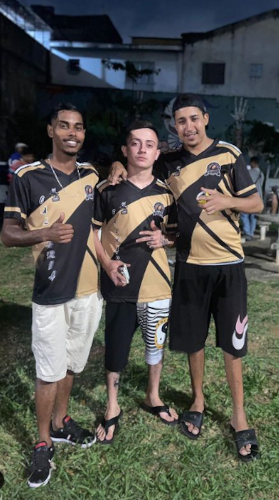

Criação do Time
O Calmaria F.S é um time de futsal, criado pelos jovens Allan Araújo Mariano, Crisnalbert Murilo e Renan Augusto da comunidade Vila Júlia-Sapopemba Z/L no dia 19/09/2023. Eles começaram do zero, com apenas um sonho, o de mostrar e enaltecer o nome de sua “quebrada” por todos cantos.
Fundadores e Presidentes
Allan Araújo Mariano
Crisnalbert Murilo
Renan Augusto
Calmaria f.s não poderia de deixar de agradecer os presidentes do time pelo seu trabalho e dedicação de fazer isso tudo acontecer, pelo comprometimento e o trabalho feito dentro o fora de quadra, isso que era apenas um sonho se tornar realidade pois isso é mais que um time mas sim uma família Unida, para o que der e vier isso é o CALMARIA F.S.